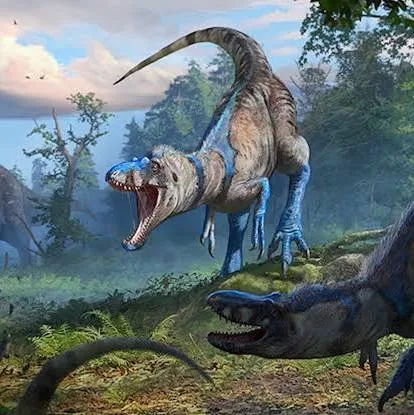
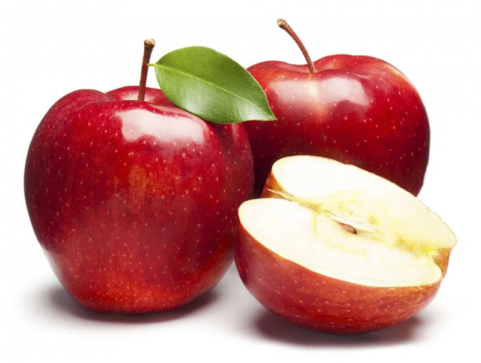
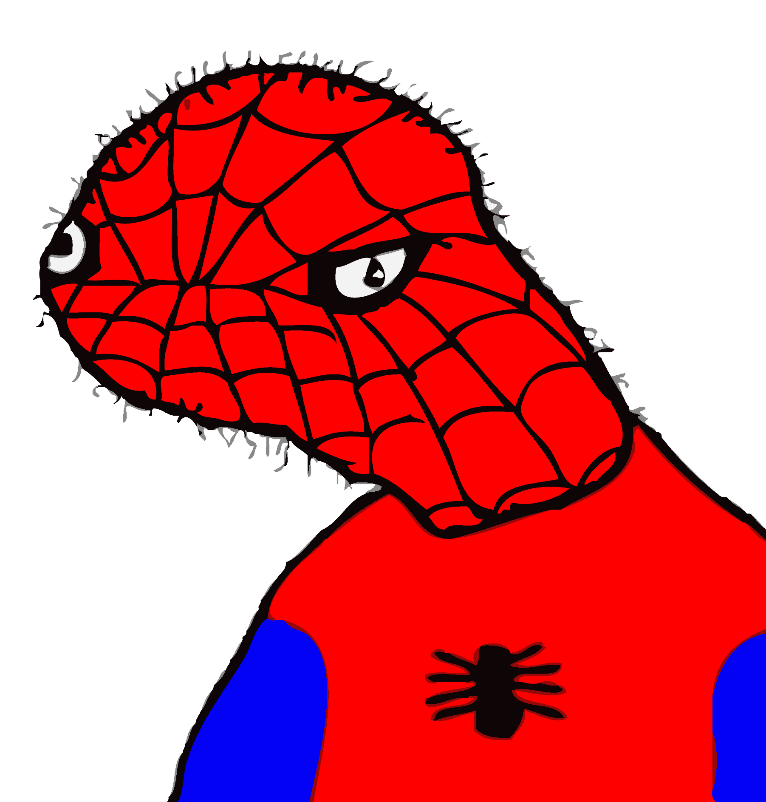
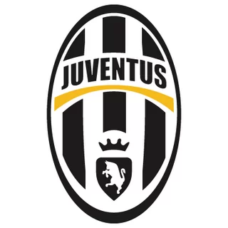
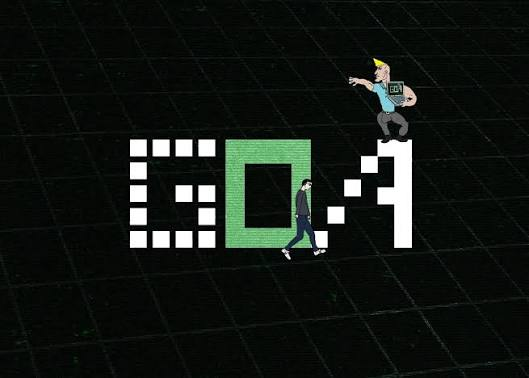

დინოზავრები (ლათ. Dinosauria) — მეზოზოური ნამარხი ქვეწარმავლების ზერიგი დიაპსიდების ქვეკლასისა. იყოფა 2 რიგად: ხვლიკმენჯა დინოზავრებად და ფრინველმენჯა დინოზავრებად. უძველესი დინოზავრები ცნობილია შუა ტრიასული პერიოდიდან. უკანასკნელი არაფრინველი წარმომადგენლები კი — ცარცული პერიოდის დამლევიდან. დღესდღეობით, დინოზავრთა ერთადერთი გადარჩენილი ჯგუფი ფრინველები არიან, რომლებიც დინოზავრების თეროპოდთა ჯგუფს მიეკუთნებიან
ვაშლი (ლათ. Malus) — ხე და ბუჩქოვან მცენარეთა გვარი ვარდისებრთა (ლათ. Rasaceae) ოჯახისა. მოიცავს 33 ველურ სახეობას, რომლებიც მსოფლიოს სხვადასხვა ქვეყანაშია გავრცელებული. მცირე აზიასა და კავკასიაში ფართოდაა კულტივირებული აღმოსავლური ვაშლი (მაჟალო) (ლათ. Malus Orientalis). ველური ვაშლი ძვირფასი მასალაა ხილის გადასამუშავებელი მრეწველობისათვის. თესლს იყენებენ საძირეების მისაღებად, მასზე ამყნობენ ვაშლის კულტურულ ჯიშებს
Spooder-man or Spooderman, is a poorly drawn version of Spider-Man. He speaks with bad grammar and has dirty quotes such as "i f*kd ur b*ch" and "ur an f*git". Spooder-man was created on February 5, 2011. The creator of the Spooder-man YouTube channel, Jordan Clory, died on February 14, 2022, 11 days after Spooder-man's 11th birthday. Spooder-man is quite self-centered, saying that he has swag, while everyone else is the last word of his second vulgar quote.
იუვენტუსი (იტალ. Juventus, ლათ. iuventus, gioventù: ახალგაზრდა), შემოკლებით იუვე — იტალიური საფეხბურთო კლუბი ტურინიდან. დაარსებულია 1897 წელს, ტურინის ლიცეუმის სტუდენტთა ჯგუფის მიერ, როგორც სპორტული კლუბი იუვენტუსი. ისტორიის უდიდესი ნაწილი „იუვეს“ გატარებული აქვს იტალიის საფეხბურთო ჩემპიონატის უმაღლეს ლიგაში (1929 წლიდან სერია A), გამონაკლისი იყო მხოლოდ 2006-07 სეზონი.მე კოდირება ძალიან შემიყვარდა რადგან შემოვედი გოაში ძალიან მომწონს გოა და მინდა გავაგრძელო კარგად სწავლა რომ მივაღწიო რამეს
